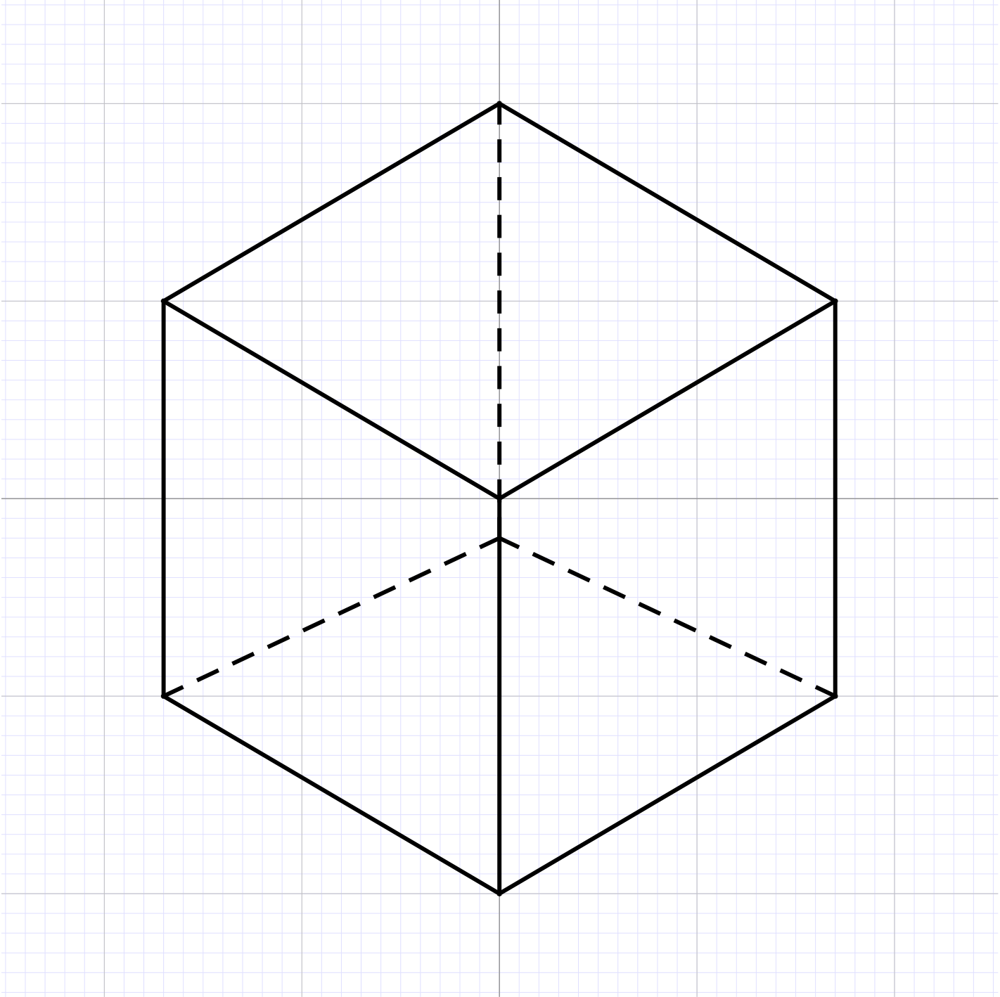

SRQ 20181123 Chevyrev
Two-dimensional Yang–Mills measure as a random distribution.
YM measure is a stochastic objects indexed by sufficient regular loops.
Today: how to make sense of this object as a random distribution.
Identify \(\mathbb{T}^2\) with \([0, 1]^2\). Let
the space of line segments. For \(\ell \in \chi\) we let \(| \ell | = \lambda\) and the direction of \(\ell\) is \(\mu\). Two line segments \(\ell, \bar{\ell} \in \chi\) are parallel if \(\pi_{\mu} (\ell) = \pi_{\mu} (\bar{\ell})\) for \(\mu = 1\) or \(\mu = 2\). Here \(\pi_{\mu} : \mathbb{T}^2 \rightarrow [0, 1]\) is the projection on the \(\mu\)-th coordinate. The distance between two parallel segments is denoted by \(d (\ell, \bar{\ell})\).
We fix a compact connected Lie group \(G\) with Lie algebra \(\mathfrak{g}\).
Definition
where for \(A \in \Omega_{\alpha}^1\) we write
and
Note that \(| A (\ell) | \leqslant | A |_{\infty} | \ell |\). Moreover \(A (\ell) - A (\bar{\ell})\) is associated to the holonomy of a loop made by \(\ell, \bar{\ell}\) (and the orthogonal segments) and we expect by Brownian behaviour of the holonomy that the fluctuations of \(| A (\ell) - A (\bar{\ell}) |^2\) are of the size of the area of the loop, which is \(d (\ell, \bar{\ell}) | \ell |\). As usual we can take any \(\alpha < 1\) to account for the loss given by controlling the pathwise behaviour.
Remark
satisfies
In particular \(\operatorname{hol} (A, \gamma)\) for \(\gamma\) an axis path is well–defined for \(A \in \Omega^1_{\alpha}\) by Young integration. Here \(\operatorname{hol} (A, \gamma)\) is the development of \(\ell_A\) from the Lie algebra \(\mathfrak{g}\) to the Lie group \(G\) by solving an ODE which makes sense here by Young integration.
Theorem
have the same joint distribution as under the YM measure.
Remark
The method of proof of the theorem is to take lattice approximations and fix a gauge by choosing the Landau gauge. Some preliminary notations:
The lattice will be \(\Lambda_N := \{ 0, 2^{- N}, \ldots, 1 - 2^{- N} \}^2\).
\(B_N\) is the set of bonds of \(\Lambda_N\) which are of the form \((x, x \pm 2^{- N} e_{\mu})\).
\(\Omega^{1, (N)}\) is the set of all \(A : B_N \rightarrow \mathfrak{g}\) such that \(A (x, y) = - A (y, x)\).
\(\mathfrak{A}^{(N)}\) is the set of all \(U : B_N \rightarrow G\) such that \(U (x, y) = U (y, x)^{- 1}\).
And finally \(\mathfrak{G}^{(N)}\) is the set of all \(g : \Lambda_N \rightarrow G\). This acts on \(\mathfrak{A}^{(N)}\) by
\(\mathfrak{A}^{(N)}\) is the space where the discrete Yang–Mills measure \(U^{(N)}\) lives. Our goal is to show that
is a tight sequence by appropriately choosing a sequence of gauge transformation \(g = g_N (U^{(N)})\).
I'm going to look for a gauge invariant quantity on \(U^{(N)}\) which can help to control the \(| \cdot |_{\alpha}\) norm after a gauge transformation.
Let \(r \subset \Lambda_N\) be a rectange of size \(2^{- N} \times k 2^{- N}\) or \(k 2^{- N} \times 2^{- N}\), \(k \in \{ 1, \ldots, 2^N - 1 \}\). For \(U \in \mathfrak{A}^{(N)}\) we define \(U (\partial r) \in G\) as ordered product along the bonds of \(\partial r\) (say we start from the bottom left corner of \(r\) and we proceed clockwise).
Define a sequence of subrectangles \(r_1 \subset r_2 \subset \cdots \subset r_k = r\) by increasing slowly the size and we define \(X = (X_i \in \mathfrak{g})_{i = 0, \ldots, k}\) (antidevelopment of \(U\) along \(r\)) by
where \(\log : G \rightarrow \mathfrak{g}\) is the left–inverse of the exponential map \(\exp : \mathfrak{g} \rightarrow G\) satisfying \(\exp (\log x) = x\). (we choose a, non unique, version of this map). We assume that it is the canonical log in the neighborhood of the identity. It is not globally continuous, but is a diffeo near the identity.
For some \(q \geqslant 1\) we have
| \(\displaystyle | X |_{q \text{-var}} \leqslant C | r |^{\alpha / 2}, \) | (1) |
| \(\displaystyle | \log (U (\partial r)) | \leqslant C | r |^{\alpha / 2} \) | (2) |
where \(| r | = k 2^{- 2 N}\) is the area of \(r\) and \(| X |_{q \text{-var}}\) is the \(q\)–variation of \(X\), namely
where the sup runs over all the partitions of \(\{ 1, \ldots, k \}\).
Fix \(N_1 \geqslant 1\) and \(U \in \mathfrak{A}^{(N_1)}\). Note that \(U\) defines an element of \(\mathfrak{A}^{(N)}\) for all \(N \leqslant N_1\).
Theorem
where \(a\) depends only on \(G\) (and \(a = \infty\) if \(G\) is Abelian). Then for \(\bar{\alpha} < \alpha\), there exists \(K > 0\), not depending on \(N_1\) (!) and \(g \in G^{(N_1)}\) so that, for \(A := \log U^g\) we have
(here we use a Landau type gauge)
In order to control the large gauge fields we need to use a different gauges (an axial type one):
Lemma
Idea of proof of Theorem 5.

Consider a box \(B\) in \(\mathbb{R}^3\) and \(A \in \Omega^1_{\infty}\) on \(B\), \(A = \sum_{\mu} A_{\mu} \mathrm{d} x_{\mu}\) \(\sum_{\mu} \partial_{\mu} A_{\mu} = 0\) (Landau condition) and on \(\partial_{\mu} B\) it satisfies \(\sum_{\nu \neq \mu} \partial_{\nu} A_{\nu} = 0\) then we can recover \(A\) from the curvature
Here \(\partial_{\mu} B\) is the component of the boundary orthogonal to \(e_{\mu}\). Then inside \(B\) we have
The conditions on the faces implies \(\partial_{\mu} A_{\mu} = 0\) on \(\partial_{\mu} B\). If I know \(A\) on the complement of \(\partial_1 B\) in \(\partial B\) then I can recover approximatively \(A_1\) inside by letting
where \(W\) is a Brownian motion starting in \(x\) and conditioned to exit \(\partial B\) at \(\partial B\backslash \partial_{\mu} B\) at the random time \(\tau\). So if I know \(A\) on the boundary then I can control \(A\) inside. We can implement this in discrete and produce refined version of the field in finer and fined grids.